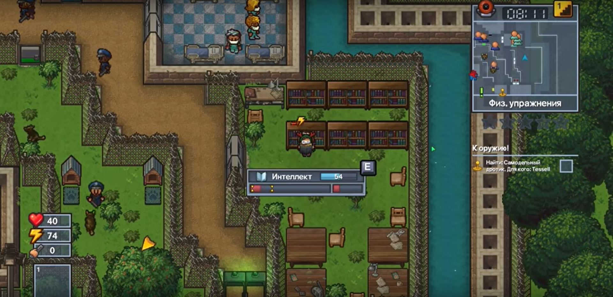

Інтелект потрібен для того щоб крафтити предмети його можна прокачати в бібліотеці

Лололошка прокачує інтелект свого персонажа
В 2 частині The escapists
Інтелект є однією з трьох головних характеристик персонажа.Інтелект необхідний для влаштування на роботи і створення предметів, причому їх рецепти діляться на рівні: рецепт більш високого рівня вимагає більшого показника інтелекту для створення.
Ігровий персонаж в грі в даний час має 3 характеристики (4 в The Escapists 2), кожна з яких має максимальний рівень 100.Значення цих характеристик можна переглянути для гравця, натиснувши клавішу P або 7 (або почніть на Xbox 360, ліва клавіша напрямку на PS4 і Xbox One). При наведенні курсора миші на стовпці ви побачите їх числове значення. Статистика гравців автоматично встановлюється на 30, коли вони вперше потрапляють до в'язниці. У першій грі характеристики гравця будуть поступово зменшуватися з плином часу, що зажадає від гравця продовження тренувань для їх підтримки. При відправленні в поодинці все вміння знижуються приблизно на 10. Статистика гравця не може опуститися нижче 10.
На сторінці Жизні, енергія там будуть інші харектиристики
Інтелект підвищується за допомогою комп'ютерів або читання книг. Цей показник необхідний, щоб бути на певних рівнях для певних завдань і створення певних предметів. Це збільшує стомлюваність, або в Консолі The Escapists / Mobile і The Escapists 2 зменшується витривалість.